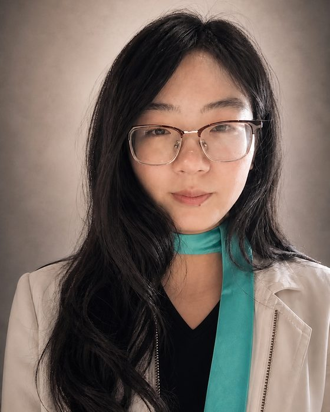

01 / AWARD-WINNING
Intelligent Interaction Design · Portfolio
王嘉欣DESIGNING DATA INTO EXPERIENCE
浙大宁波理工学院 · 智能交互设计 241
用数据、文化与技术，设计可被理解、可被参与、也能真正发生的交互体验。
 2026 第十四届未来设计师·全国高校数字艺术设计大赛｜全国一等奖
2026 第十四届未来设计师·全国高校数字艺术设计大赛｜全国一等奖SCROLL TO EXPLORE ↓
用数据、文化与技术，设计可被理解、可被参与、也能真正发生的交互体验。
2026 第十四届未来设计师·全国高校数字艺术设计大赛｜全国一等奖作品围绕数据叙事、文化数字化与无障碍交互展开，记录从研究、概念到网页原型实现的过程。
作为浙大宁波理工学院智能交互设计专业 241 班学生，擅长将复杂信息转化为清晰、可参与的交互体验。其设计成果聚焦网页交互、数据可视化、文化数字化与无障碍体验，善于将研究、叙事与技术实现组织成可被使用的作品。不仅关注界面如何呈现，也关注用户如何进入、理解、操作并记住一个项目。
手机 17816941421 · QQ邮箱 2041645425@qq.com
